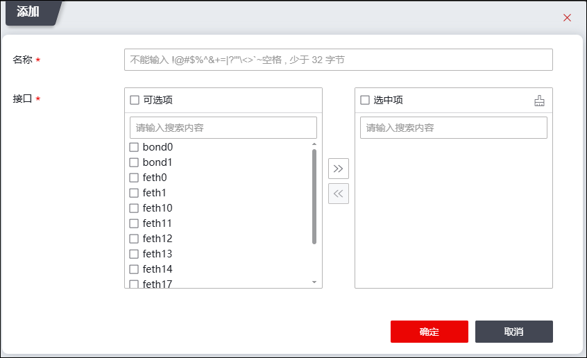

接口联动功能可以在防火墙工作在双机热备、负载均衡或者连接保护模式时，在短时间内根据单一接口的状态调整组内所有接口的状态，保证转发设备出接口和入接口状态的一致性，以防止在设备链路出现故障时，出现丢包情况。例如：当连接保护模式下的设备A负责转发数据的出口down掉时，属于同联动组的入口状态也同步down，则入口所连设备将会判断入口down了，就可以及时将数据通过其它的设备B进行传输。
| 步骤1 | 选择 。 |
| 步骤2 | 添加联动组。 |
1）点击『添加』，进入“添加”对话框，界面如下图所示。

在添加接口联动组时，各项参数的具体说明如下表所示。
参数 |
说明 |
|---|---|
名称 |
必填项，输入接口联动组的名称，长度最多不能超过32个字节。 |
接口 |
选择接口联动组中的接口成员。 “可选项”窗格列出了设备当前所有的物理接口，选择该窗格中的接口后，点击【>>】按钮将其添加到“选中项”；“选中项”窗格列出了联动组中当前包括的接口，选中该窗格中的接口后，点击【<<】按钮将其从联动组中删除。 说明： 1）联动组的接口成员需为防火墙的物理接口或链路聚合口，不支持子接口和VLAN接口； 2）同一个物理接口不能同时属于不同的联动组，并且每个联动组的成员数不能低于两个，不能高于八个； 3）已经加入到链路聚合中的接口不能再加入到接口联动组中。 |
2）点击【确定】按钮完成接口联动组的创建，点击【取消】按钮撤销本次操作。
| 步骤3 | 启动/禁用接口联动功能。 |
Ø选中联动组列表，点击列表上方的“启用/禁用”，可启用/禁用联动组。
Ø点击列表上方的“全局开启”，可启用所有联动组。点击列表上方的“全局关闭”，可禁用所有联动组。